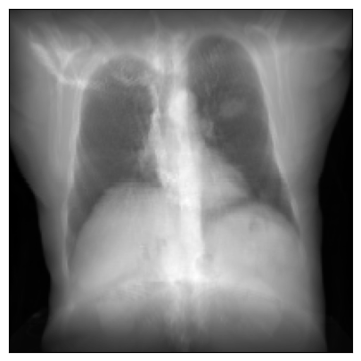

The following minimal example specifies the geometry of the projectional radiograph imaging system and traces rays through a CT volume:
import matplotlib.pyplot as pltimport torchfrom diffdrr.drr import DRRfrom diffdrr.data import load_example_ctfrom diffdrr.visualization import plot_drr# Read in the volume and get its origin and spacing in world coordinatessubject = load_example_ct()# Initialize the DRR module for generating synthetic X-raysdevice = torch.device("cuda"if torch.cuda.is_available() else"cpu")drr = DRR( subject, # An object storing the CT volume, origin, and voxel spacing sdd=1020.0, # Source-to-detector distance (i.e., focal length) height=200, # Image height (if width is not provided, the generated DRR is square) delx=2.0, # Pixel spacing (in mm).).to(device)# Set the camera pose with rotations (yaw, pitch, roll) and translations (x, y, z)rotations = torch.tensor([[0.0, 0.0, 0.0]], device=device)translations = torch.tensor([[0.0, 850.0, 0.0]], device=device)# 📸 Also note that DiffDRR can take many representations of SO(3) 📸# For example, quaternions, rotation matrix, axis-angle, etc...img = drr(rotations, translations, parameterization="euler_angles", convention="ZXY")plot_drr(img, ticks=False)plt.show()

On a single NVIDIA RTX 2080 Ti GPU, producing such an image takes
25.2 ms ± 10.5 µs per loop (mean ± std. dev. of 7 runs, 10 loops each)
The physics-based pipeline in DiffDRR renders photorealistic X-rays. For example, compare a real X-ray to a synthetic X-ray rendered from a CT of the same patient using DiffDRR (X-rays and CTs from the DeepFluoro dataset):
DiffDRR rendering from the same camera pose as a real X-ray.
2D/3D Registration
The impotus for developing DiffDRR was to solve 2D/3D registration problems with gradient-based optimization. Here, we demonstrate DiffDRR’s capabilities by generating two DRRs:
A fixed DRR from a set of ground truth parameters
A moving DRR from randomly initialized parameters
To align the two images, we use gradient descent to maximize an image similarity metric between the two DRRs. This produces optimization runs like this:
Iterative optimization of moving DRR to a target DRR.
For examples running DiffDRR on real surgical datasets, check out our latest work, DiffPose:
Registering real X-rays to real CT scans.
This work includes a lot of real-world usecases of DiffDRR including
Using DiffDRR as a layer in a deep learning architecture
Alignment of real X-rays and rendered DRRs
Achieving sub-millimeter registration accuracy very quickly
Segmentation
DiffDRR can project 3D labelmaps into 2D simply using perspective geometry, helping identify particular structures in simulated X-rays (these labels come from the TotalSegmentator v2 dataset):
Projected segmentation masks.
Volume Reconstruction
DiffDRR is differentiable with respect to the 3D volume as well as camera poses. Therefore, it can be used for volume reconstruction via differentiable rendering (see reconstruction.ipynb)!
🆕 Examples on Real-World Data 🆕
For an in-depth example using DiffDRR for cone-beam CT reconstruction, check out DiffVox.
Development
TLDR: Source code is stored in notebooks/api/, not diffdrr/. Update the notebooks instead!
DiffDRR source code, docs, and CI are all built using nbdev. To get set up with nbdev, install the following
mamba install jupyterlab nbdev -c fastai -c conda-forge nbdev_install_quarto# To build docsnbdev_install_hooks# Make notebooks git-friendly
Running nbdev_help will give you the full list of options. The most important ones are
nbdev_preview# Render docs locally and inspect in browsernbdev_clean# NECESSARY BEFORE PUSHINGnbdev_test# tests notebooksnbdev_export# builds package and builds docs
DiffDRR reformulates Siddon’s method,1 the canonical algorithm for calculating the radiologic path of an X-ray through a volume, as a series of vectorized tensor operations. This version of the algorithm is easily implemented in tensor algebra libraries like PyTorch to achieve a fast auto-differentiable DRR generator.
Citing DiffDRR
If you find DiffDRR useful in your work, please cite our paper:
@inproceedings{gopalakrishnan2022fast,
title={Fast auto-differentiable digitally reconstructed radiographs for solving inverse problems in intraoperative imaging},
author={Gopalakrishnan, Vivek and Golland, Polina},
booktitle={Workshop on Clinical Image-Based Procedures},
pages={1--11},
year={2022},
organization={Springer}
}
If the 2D/3D registration capabilities are helpful, please cite our followup, DiffPose:
@article{gopalakrishnan2023intraoperative,
title={Intraoperative {2D/3D} image registration via differentiable {X}-ray rendering},
author={Gopalakrishnan, Vivek and Dey, Neel and Golland, Polina},
booktitle={Proceedings of the IEEE/CVF Conference on Computer Vision and Pattern Recognition},
pages={11662--11672},
year={2024}
}
If you use the 3D CBCT reconstruction capabilities, please cite our followup, DiffVox:
@article{momeni2024voxel,
title={Voxel-based Differentiable X-ray Rendering Improves Self-Supervised 3D CBCT Reconstruction},
author={Momeni, Mohammadhossein and Gopalakrishnan, Vivek and Dey, Neel and Golland, Polina and Frisken, Sarah},
booktitle={Machine Learning and the Physical Sciences, NeurIPS 2024},
year={2024}
}